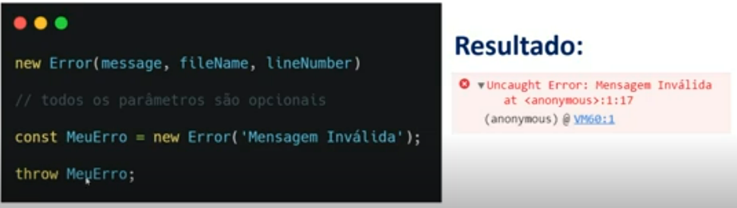
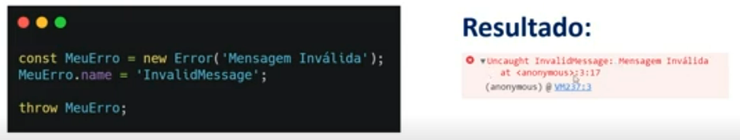

Ocorre em tempo de execução. Vê que algo não foi declarado, que faltou alguma vírgula, etc...
Erros relacionados ao código que está sendo consumido por uma página da web. Referente à árvore de estruturas da web.
É usado no mesmo contexto e forma de um return. O throw, porém, gera uma mensagem com "mais cara" de erro.
O try...catch vai tentar executar o código no try e se der erro nós vamos capturar esse erro no catch e trabalhar com ele. O finally indica um trecho de código que será executado, independente se for instruído o retorno ou não de um erro.
É uma classe do js.
Nós podemos criar a prop name para o erro e no console dele haverá a exibição desse name.
